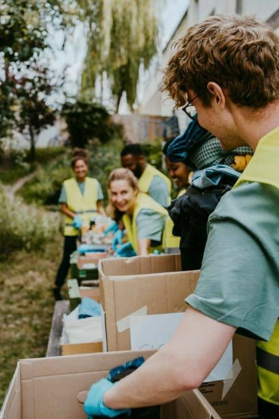
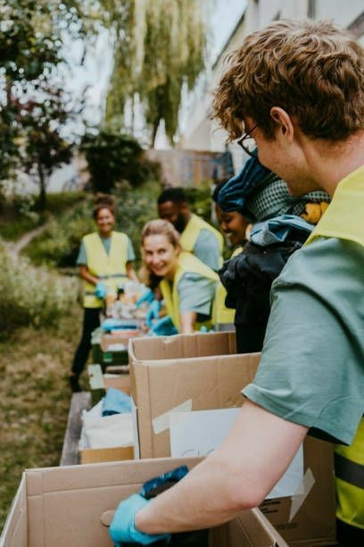

Missão
Promover a transformação social por meio de ações solidárias, educativas e sustentáveis, contribuindo para o bem-estar e o desenvolvimento das comunidades.
Nosso compromisso é ajudar comunidades carentes através de diversos projetos sociais. Junte-se a nós nessa missão!
A ONG Brasil Esperança é uma organização não governamental dedicada a promover o bem-estar social e o desenvolvimento sustentável em comunidades vulneráveis. Fundado em 2010, nosso trabalho abrange diversas áreas, incluindo educação, saúde, meio ambiente e assistência social.
Promover a transformação social por meio de ações solidárias, educativas e sustentáveis, contribuindo para o bem-estar e o desenvolvimento das comunidades.
Ser reconhecida como uma organização de referência no impacto social positivo, inspirando a construção de uma sociedade mais justa, humana e igualitária.
Ética, transparência, empatia, respeito, comprometimento e trabalho coletivo — princípios que orientam todas as nossas ações e decisões.
Desde a nossa fundação, temos trabalhado incansavelmente para promover mudanças positivas nas comunidades que atendemos. Nossas conquistas incluem a implementação de programas educacionais, campanhas de saúde e iniciativas de sustentabilidade que impactaram milhares de vidas.
Nossa equipe é composta por profissionais dedicados e voluntários apaixonados pela causa social. Contamos com uma estrutura organizacional eficiente que nos permite planejar, executar e monitorar nossos projetos de forma eficaz.
Comprometidos com a transparência, disponibilizamos relatórios anuais detalhando nossas atividades, finanças e impacto social. Acreditamos que a confiança é fundamental para fortalecer nossa relação com apoiadores, parceiros e a comunidade.


 



Estamos localizados na R. Figueiredo Camargo, 137 - Bangu, Rio de Janeiro - RJ, 21875-020
Celular: (21) 99999-9999
Email: contato@ongbrasilesperanca.com.br